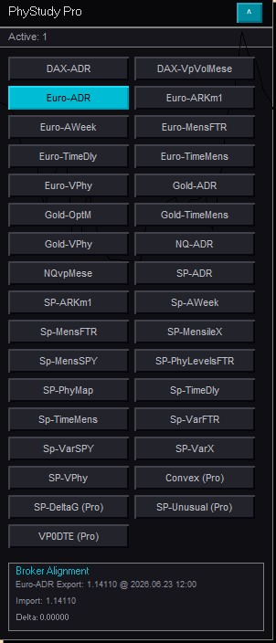

Ogni indicatore disponibile in PhyStudy nasce da anni di ricerca su prezzo, tempo e volume. Qui trovi una descrizione sintetica di ciascuno.
PhyStudy Pro è l'interfaccia che raccoglie tutti gli strumenti PhyMap in un unico pannello. Installato su MT4, si connette ai server PhyMap e rende disponibili in tempo reale tutte le analisi con un semplice clic.
Ogni indicatore viene attivato singolarmente, permettendo di costruire la propria configurazione in base all'asset, al timeframe e allo stile operativo.

Una panoramica sintetica di ogni componente dell'ecosistema PhyStudy.
Le ADR (Aree di Reazione) sono zone chiave del grafico dove si sono verificati sbilanciamenti significativi tra domanda e offerta. Funzionano come supporti e resistenze dinamici e nel 70% dei casi il prezzo genera una reazione significativa al loro contatto.
Aree di reazione su base settimanale, tracciate ogni lunedì mattina in base agli sbilanciamenti della settimana precedente. Forniscono il contesto strutturale di medio termine e sono ideali per confluenze con le ADR giornaliere.
Livelli di espansione probabile del prezzo calcolati in tempo reale sulla base della volumetria in opzioni dell'S&P 500. Nel 90% dei casi il prezzo raggiunge almeno uno dei due estremi della proiezione giornaliera.
Sistema proprietario che individua i punti di curvatura temporale (massimi e minimi ciclici) su base daily e mensile. Lavora con strutture temporali predefinite rappresentate da triangoli (punti di inversione) e barre intermedie (metà ciclo).
Mappatura degli strike mensili delle opzioni su tutti i principali asset. Ogni livello mostra i contratti netti aperti, aggregati in un volume profile orizzontale aggiornato giornalmente, che rivela il posizionamento istituzionale nel lungo periodo.
Monitora i cambiamenti più significativi nei livelli mensili delle opzioni, tracciando l'evoluzione delle posizioni nel corso del contratto. Funziona come un sensore di attività istituzionale: segnala quando un livello inizia a "pesare" davvero per il mercato.
Volume Profile proprietario che individua aree di densità invece di singoli punti. Fa per la microstruttura intraday ciò che le ADR fanno per i cicli giornalieri: mostra dove si concentra la liquidità nel breve termine.
Mostra l'evoluzione in tempo reale dei volumi sulle opzioni 0DTE Futures (scadenza giornaliera) dell'S&P 500. I livelli di strike con maggiore concentrazione di scambi tendono a diventare punti di reazione, stop o accelerazione per il prezzo intraday.
Rileva movimenti anomali nel mercato delle opzioni: scambi molto superiori alla media o concentrati su specifici strike. Segnalano posizionamenti significativi di operatori importanti e aiutano a capire dove si sta muovendo il capitale "grande".
Analizza l'intera volumetria delle opzioni e calcola la distribuzione del rischio giornaliera, individuando un punto di equilibrio (freccia gialla) e le aree di maggiore attrazione per il prezzo (frecce rosse e verdi). Integrato con i PhyMap Level, chiarisce la direzione probabile dell'espansione.
Analizza il flusso delle coperture obbligatorie legate al gamma delle opzioni 0DTE. Permette di visualizzare la pressione matematica esercitata sul sottostante e, integrato con gli altri strumenti volumetrici, conferma con maggiore precisione i livelli di interesse.
Una nuova forma di candela ispirata alla fisica ondulatoria. Converte l'intera escursione di prezzo in corpo direzionale puro, eliminando il rumore visivo e rendendo immediata la lettura della pressione direzionale. Il movimento diventa flusso netto, ogni candela diventa onda.
Il software che gestisce le licenze e il funzionamento di tutti gli indicatori rilasciati. Include una sezione di messaggistica interna per comunicazioni e aggiornamenti. In prospettiva, diventerà il centro di controllo dell'intera infrastruttura PhyMap.
Il pannello operativo che completa l'ecosistema. Permette di calcolare Risk/Reward e size ottimale in tempo reale, e di ricevere alert automatici sul cellulare quando il prezzo raggiunge i livelli PhyMap più importanti, come ADR o PhyMap Level per l'S&P 500.
Dalla licenza trimestrale al Master PhyMap: ogni percorso include l'accesso agli strumenti descritti in questa pagina.